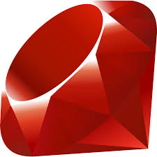

Jeferson Guerrero
Profesional en marketing y programador ,gran apasionado por la tecnologia y los cambios que esta puede tener en el mundo.
Quiero pensar que aporto día a día un grano de arena para crear un mundo que tecnológico ayude a mas personas.
En una palabra , un estratega, en una frase un apasionado por el saber hacer y un pensador amante de contar buenas historias.
CONOCIMIENTOS
-

2018
React js
Mis conocimientos en esta bibliotecan abarcan desde la creación de componentes como clase y su manejo de estados, la creación de componentes funcionales y uso de Reack Hooks hasta la integración con paradigmas como Redux para el manejo de estados globales en la apliacion, estructuración de rutas y manejo vistas delimitadas por permisos o por roles
Fabricantes Directos React Firebase Semantic UI -
2019
Express - Sails js
Debido al potencial de un entorno completo de JavaScript me he aventurado hacia el mundo de node js, probando y desarrollando algunas aplicaciones en herramientas como Express y Sails JS (Un tipo de Ruby On Rails escrita sobre Express)
Dentro de esta tecnología he desarrollados aplicaciones CRUD y autenticación basada en JSON WEB TOKENS
-

2017
Angular 6
Tengo un conocimiento básico del Framework habiendo realizado algunos proyectos de poca envergadura con él, poseo además un conocimiento del manejo de su arquitectura y conocimiento en TypeScript.
Debido a mi rutina diaria y mi gusto por estar bien informado pero solo de fuentes precisas desarrolle un pequeño proyecto para poder tener un alista de diferentes medios de una manera rápida a la vez de por guardar noticias para leerlas después o para compartirlas con amigos, además de un formad e buscar noticias por palabra clave
Jeff News Angular 6 Firebase Bootstrap -

2016
Rubi - Ruby on Rails
Fue el primer lenguaje que adopte, debido a su potencial y a su facil tipado es un lenguaje que utilice mucho en mis primeros años para desarrollar soluciones de backend con su Framework Ruby on Rails y su arquitectura MVC utilizando con él bases de datos como PostgreSQL , Mongo entre otras
Dentro de los proyectos desarrollados con posibilidad de compartir esta PinterJeff un semi clon de Pinterest desplegado en Heroku
PinterJeff Ruby On Rails Postgrest Bootstrap -

2018
Firebase Google
Con conocimientos en varias de los servicios de Firebase como lo son Firestore (Base de datos No SQL en tiempo real) , manejo de su servicio de autenticación , Cloud Storage para el manejo de archivos, Gestión a producción con Firebase Hosting, Cloud Function (un entorno de ejecución sin servidores manejado en Node Js - Express) entre otros...